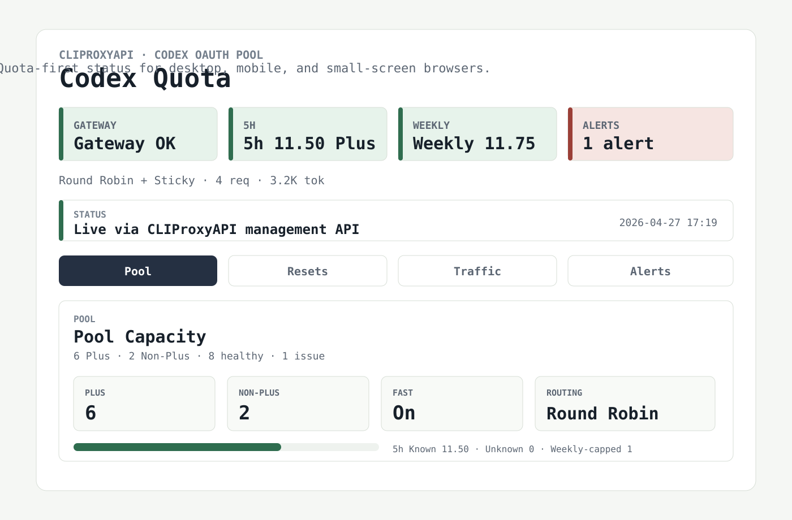

Codex and CPA aware
Combines CPA management state, CPA usage statistics, optional direct Codex quota windows, and optional SQLite history.
CLIProxyAPI · Codex OAuth Pool · NixOS
A self-hosted monitor for operators running multiple Codex auth files behind CLIProxyAPI. Track 5h and weekly pool capacity, CPA usage, reset windows, account health, and machine-readable agent recommendations.

Combines CPA management state, CPA usage statistics, optional direct Codex quota windows, and optional SQLite history.
Exposes /api/recommendations, /api/diagnostics, /api/alerts, and Prometheus /metrics.
Runs as a Python app, Nix flake package/app, or NixOS service module. The default bind stays on 127.0.0.1.
Run against a local CLIProxyAPI management gateway and optional auth-file directory.
nix run github:dskdkj3/codex-quota-monitor#codex-quota-monitor -- \
--management-base-url http://127.0.0.1:8318 \
--gateway-health-url http://127.0.0.1:8317/healthz \
--auth-dir /path/to/auth-files